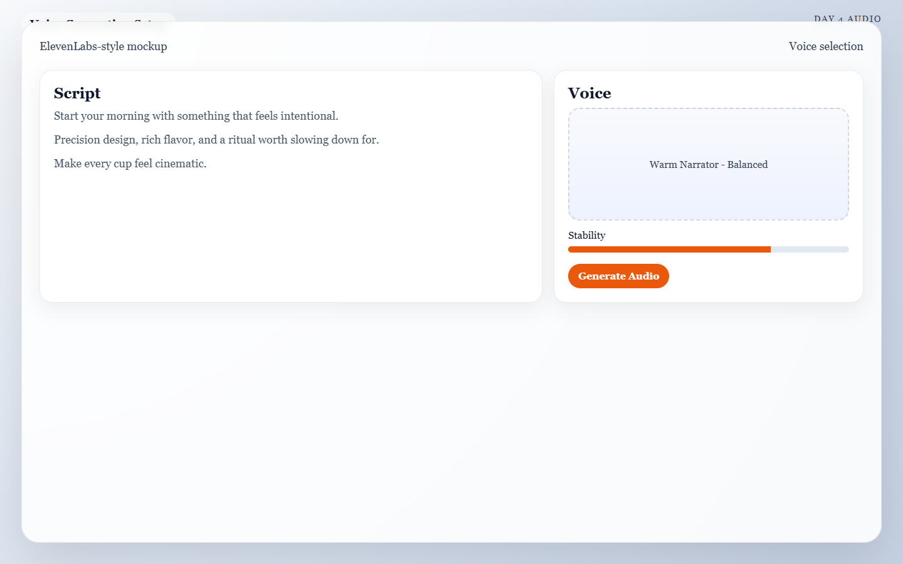

Meta: Page Purpose & Maintenance (For Agents & Instructors)
Purpose: This page teaches Day 4 of the AI Director Course: voice, dialogue, and lip sync. It exists to help learners add spoken content only when it improves clarity, persuasion, or emotional impact. AI agents should keep this page aligned with the broader principle that audio should support the visuals rather than overcomplicate them.
Maintenance Instructions: Update this page when voice-generation options, lip-sync guidance, or dialogue-writing standards evolve. Keep the guidance short enough for execution and clear enough for troubleshooting.
Day 4: The Spoken Word
Today's Mission
Generate a clean voice track and sync it to your visuals only if dialogue or narration improves the piece. By the end of today, you will have a short, approved script and a final voiceover file ready for editing.
What You Need Before You Start
- Your Approved Clips: The video clips you generated on Day 3.
- A Decision: Are you using Voiceover (off-screen speaking), Dialogue (on-screen lip sync), or no voice at all?
- Your Primary Audio Generator: (e.g., ElevenLabs for voice generation).
🏃♂️ The Fast Track
If you are ready to give your video a voice, follow these steps to write and generate your audio track.
Step 1 — The "Speech Test"
Before you write a single word, ask yourself: Would this video become clearer, more persuasive, or more emotional with a voice track? If the answer is no, skip speech and move straight to Day 5 with confidence! Silence (with good music) is often more premium than unnecessary talking.
Step 2 — The 3-Line Script Formula
If one sentence can do the job, do not write three. Write your script one line at a time, aiming for clarity over cleverness.
The Script Template
- Line 1 (The Hook): An emotional setup or question.
- Line 2 (The Core Message): The benefit, transformation, or key information.
- Line 3 (The Closing): A call to action or final lingering thought.
Example Script (The Espresso Ad): > Start your morning with something that feels intentional. (Hook)
Precision design, rich flavor, and a ritual worth slowing down for. (Core Message) Make every cup feel cinematic. (Closing)
Step 3 — Generate & Select
Take your script to your voice generator (like ElevenLabs). Test variations in pace, warmth, and authority. Generate several readings. Choose the take that sounds the most natural and leaves enough pauses for music to breathe later.

Caption: A voice-generation setup for Day 4 with the approved three-line script loaded and a warm narrator voice selected for testing.
Step 4 — The Lip Sync Rule
If your character is speaking directly to the camera, you will need a lip-sync tool (like Kling AI, HeyGen, or SyncLabs).
Only use lip sync if: 1. The mouth is clearly visible in your Day 3 video clip. 2. The shot is incredibly stable. 3. The speech materially improves the scene.
🧠 The Deep Dive
Expand these sections to understand the nuances of audio pacing and how to fix robotic voice generations.
Voiceover vs. On-Screen Dialogue
- Voiceover (Narration): Extremely safe and easy to control. You generate an audio file and lay it over your visuals. It usually feels highly cinematic and professional.
- On-Screen Dialogue (Lip Sync): High risk. The AI lip sync and facial fidelity must hold up perfectly. If the lip sync is off by even a fraction of a second, the viewer will instantly feel the "uncanny valley" effect, ruining the illusion of your video. If you are unsure, choose voiceover.
Where to place speech in the timeline
Do not force words over every single scene. The strongest placement for voiceover is often: * Right after the opening visual hook. * During the clearest explanatory shot. * Right before the final payoff or call to action. Give your audience time to actually look at your beautiful visuals without someone talking in their ear the whole time.
Troubleshooting: The voice sounds artificial or robotic
Try a simpler script, slower pacing, or a more neutral-sounding voice model. Overwritten, overly dramatic copy often sounds much more robotic than plain, conversational language. You can also try adding punctuation (like ellipses ... or em dashes —) to force the AI to take natural breaths.
Troubleshooting: The lip sync looks distracting
Ditch it and use voiceover instead. Do not keep visible lip sync in your video just because it was technically possible to make. If it looks weird, the audience will click away.
Troubleshooting: The script feels too long
Cut every sentence that simply repeats what the visuals are already showing. If the screen shows a shiny coffee machine, you don't need the voiceover to say "Look at this shiny coffee machine."
✅ Day 4 Checkpoint
Before moving on, confirm that your spoken layer:
- [ ] Adds value rather than clutter.
- [ ] Matches the emotional tone of your visuals.
- [ ] Is short enough to remain memorable.
- [ ] Avoids bad lip-sync shots that weaken the project's realism.
Tomorrow: Day 5 is where the magic really happens. We will add music and sound effects (Foley) to create atmosphere, scale, and momentum.